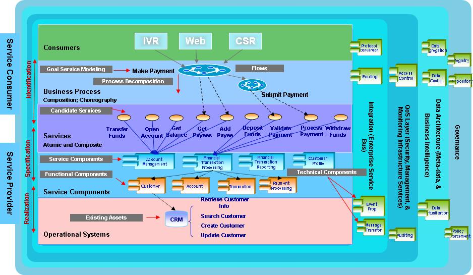
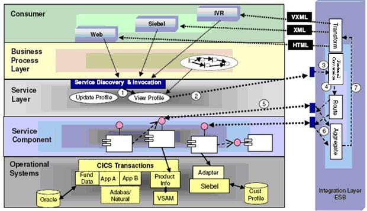
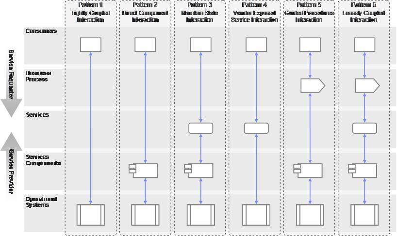

| Guideline: Architecture Overview Using SOA Reference Architecture |
 |
|
| Related Elements |
|---|
IBM SOA Reference Architecture Solution View aka IBM SOA Solution Stack represent logical architecture consisting of nine abstract layers - five horizontal layers and four vertical cross cutting layers. It provides a blueprint to facilitate the definition and instantiation of the architecture for various levels of scope: the ecosystem, an enterprise or a specific solution. It supports different kind of architectural styles including the SOA, object-oriented, component based architecture, event-driven, and message-driven styles. The maturity of our clients will indicate the combination of required architecture styles. The nine layers of the architecture are:
The layered architecture is not strict meaning a particular layer can directly interact with any layers under it but not the layers above it. The introduction of services (or interface) layer in the logical architecture elevated the common notion of "programming to interfaces instead of implementation" from programming model and from just being a concern for developers to an architectural style and a new mantra for architects. Layer 1 represents the operational layer of the architecture including infrastructure and operational systems building blocks. Layers 2-5 represents the various aspects of functional layers of the architecture such as components, services, business processes, user interface, portals, channels etc. Layers 6-9 represents non functional layers of the architecture in a nutshell. Typically products from IBM and other vendors help to instantiate the architectural building blocks in these layers. SOA Reference Architecture consists of a set of layers that
The following is an example of instantiated SOA reference architecture and presents an architecture overview for the solution in scope. Multiple such architecture overview diagrams based on the SOA reference architecture can be created to represent different functional area.
 The diagram shows different building blocks in each of the layers and interaction between the layers. The arrows between process and service layers signifies that business processes in the process layer are enabled by the services in the services layer. The arrows between services and component layers signifies that services are allocated/placed to service components for realization. The arrows between service component and functional and technical components signifies dependencies between service components, functional components and technical components. The arrows between component layer and operational systems layer signifies component dependency on existing operational systems. Similarly interaction between horizontal and vertical layers can be depicted. An architect would need to consider options and decide building blocks for each of the layers, interaction among the layers, product mapping for these building blocks when applicable and so forth to instantiate IBM SOA Reference Architecture for a specific solution as shown above. As part of realization decision for the solution an architect identifies different layers of the architecture in play in the solution or parts of the solution. Following figure illustrates interactions with vertical layers in particular integration layer.  The interactions with integration layer in the above example are described as follows:
As mentioned above the IBM SOA Reference Architecture provides a blueprint for not just SOA based solution but also non-SOA. The layered architecture provides flexibility to choose a set of interaction patterns for realization scenarios with all or a subset of layers based on usage scenario.
 The rightmost pattern (pattern 6) depicts the most flexible architecture but requires the highest maturity in the organization. |
| Concepts | |
|---|---|
| Whitepapers |
| Content Lead | arsanjan@us.ibm.com |
|---|---|
| Change Date | Thu Mar 17 19:36:47 IST 2011 |
© Copyright IBM Corp. 1987, 2016 All Rights Reserved |